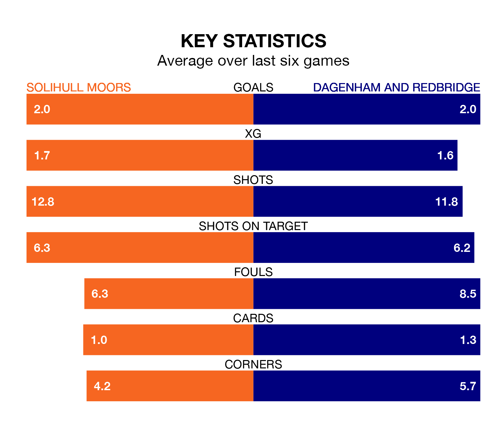

Dagenham and Redbridge travel to Solihull Moors on late Tuesday in National League.
The visitors come into the game on the back of a defeat in their last match, having lost to Kidderminster Harriers 1-0 at home.
The Moors also lost their last match, 2-1 against Maidenhead United, with their goal scored by Josh Kelly.
In the last 10 years, Solihull Moors and Dagenham & Redbridge have played each other on 15 occasions. Solihull Moors won five of them, Dagenham & Redbridge seven, and they drew three times.
On average, the Moors scored 1.7 goals and Dagenham & Redbridge 2.1 in those matches.
Their last meeting was on November 11, when Solihull Moors won 2-1 away.
Solihull Moors are fifth in the table after 28 games, of which they have won 13 and drawn seven, earning 46 points.
Dagenham & Redbridge are 13 places behind the Moors in 18th, with nine wins and six draws putting them on 33 points.
With 36 goals in 29 games so far this season, the visitors are scoring at below the league average rate with 1.2 goals per game. But they are conceding fewer than average too, letting in 41 goals at a rate of 1.4 per game.
The home side, meanwhile, are above average scorers, with 1.6 goals per game, compared to a league average of 1.5. They have conceded 1.4 goals per game.
Solihull Moors are in mixed form in National League, with three wins and three losses from their last six games.
With two wins and two draws over that period, Dagenham & Redbridge's form is slightly worse – they have taken eight points from 18, compared to Solihull Moors's nine.
Updated: 09:21 (UTC), 30/01/24